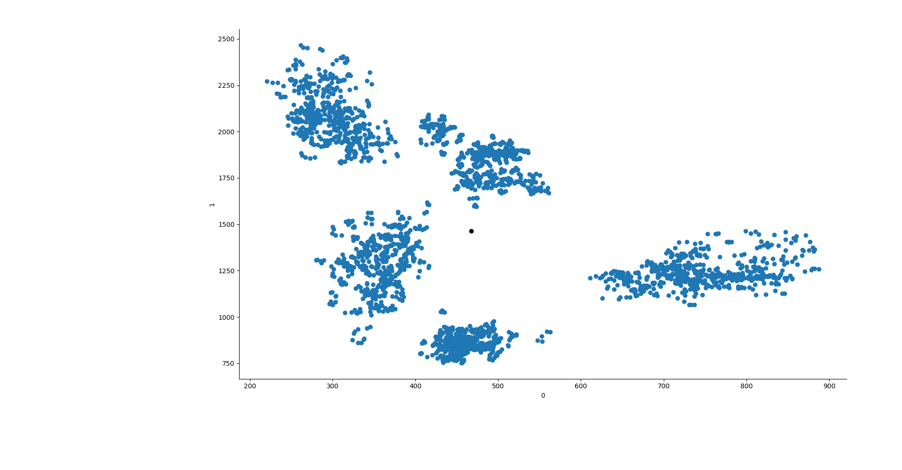

Unsupervised Vowels
La differenza fra supervised e unsupervised learning è che il primo ha bisogno dell'aiuto umano per imparare, ad esempio, a categorizzare i dati, mentre il secondo non ha bisogno di altro che i dati per poi proporre dei gruppi che scopre da solo. Nel futuro l'A.I. conquisterà il mondo con supercyborg, almeno questo è quello che leggo, quindi sarebbe meglio far sì che questi cyborg imparino a distinguere una u da una i, altrimenti c'è il rischio che al grido di "Fuoco" capiscano "fioco" o ancor peggio "fc". Questa digressione è per far capire che si parlerà di categorizzazione delle vocali tramite unsupervised clustering con k-means.
Vocali, formanti e altre frequenze leggendarie
In questo blog sono state spesso trattate le vocali e formanti, come normalizzarle e come estrarle con PRAAT.
In breve, utilizzeremo le frequenze F1 ed F2 per categorizzare le vocali di questo dataset di parlanti Giapponesi. Il dataset contiene anche frequenze F3 ed F4, così come le bandwidth da B1 a B4, ma noi saremo interessati solo alle prime due colonne/variabili del dataset.
K-Means
Wikipedia offre un'ottima spiegazione di K-Means. In breve: Vengono disposti a caso, o non, N centroidi, dove N = al numero di gruppi che si vogliono ottenere. In questo caso, ad esempio, io vorrò ottenere solo 5 gruppi dai dati.
Per prima cosa, si calcola la distanza euclidea tra ogni centroide precedentemente creato e i dati osservati, in base alle distanze, si partizionano i dati in N gruppi. Il nuovo centroide di ogni cluster così creato sarà usato come punto di partenza, proprio come prima, e le distanze saranno ricalcolate.
Si arriverà alla fine ad un punto in cui i centroidi sono posizionati in modo da non muoversi più, e così la classificazione sarà terminata con successo, anche se magari non sarà accurata.
Va ricordato infatti, che difficilmente questo metodo di clustering da risultati vicini alla realtà con dati naturali.
E' praticamente come quando ad una festa di cinque gruppi di amici. Ogni gruppo sta aspettando che arrivi l'ultimo loro membro. Finalmente gli ultimi 5 invitati arrivano alla festa e, pian piano, si muovono ognuno verso il loro gruppo di amici.
Implementazione in Python
Avremo bisogno dei seguenti packages:
import matplotlib.pyplot as plt import pandas as pd import numpy as np import seaborn as sns from sklearn.cluster import KMeans from sklearn.cluster import AgglomerativeClustering
Pandas ci servirà a maneggiare i dati così come numpy, che sarà anche utilizzato per personalizzare un pò K-Means.
Importeremo K-Means ma anche AgglomerativeClustering, giusto per un paragone, non andremo nel dettaglio.
Si può evitare di importare seaborn e matplotlib, anche se si perde la maggior parte del divertimento a mio parere.
Successivamente, prendiamo i dati dal National Institute of Information and Communications Technology Giapponese.
Questo dataset contiene valori per le formanti "F1", "F2", "F3" ed "F4". Inoltre, contiene valori per le bandwidth corrispondenti. Noi avremo bisogno solo dei primi due valori, dato che sono i più utilizzati nelle prime analisi esplorative di un sistema vocalico di una lingua, assieme al pitch che è però qui assente.
link = "http://www2.nict.go.jp/bit/people/parham/documents/formantsETL/MokhtariTanaka2000_ETLformantdata.txt" data = pd.read_fwf(link, header=None) X = data[[0,1]]
Ora che abbiamo selezionato solo le prime due colonne che ci interessano, "F1" ed "F2", andiamo a preparare tutto per K-Means.
Scikit learn offre tre modi di inizializzare K-Means. Noi utilizzeremo il metodo random e forniremo manualmente i punti di partenza dei centroidi. Cerchiamo quindi di creare manualmente i centroidi. Se plottiamo le formanti F1 ed F2 così come sono, vedremo come si dispongono in 2D. Sembrano creare dei gruppi ben definiti,
e sembra che se ponessimo dei centroidi in diagonale, dall'alto a sinistra, verso il basso a destra, ci troveremmo a lasciare i centroidi in una posizione iniziale ben distribuita. Per fare ciò creiamo un segmento, quindi, che va da x0 = 300 a x1 = 650 e da y0 = 2250 a y1 = 610. Questo creerà quindi un segmento in discesa, su cui lasceremo 5 punti a distanza uguale l'uno dall'altro.

line = np.linspace(300, 650, 5) line2 = np.linspace(2250, 610, 5) lines = [np.array([line[x], line2[x]]) for x in range(len(line))]
La variabile lines ci tornerà utile alla fine.
Ora diamo i dati a K-Means. Per fare ciò compareremo il K-means con centroidi posti a random e quello con centroidi posti manualmente.
Con n-init diremo all'algoritmo di essere ripetuto una volta sola, mentre max-iter dirà di compiere 550 iterazioni all'interno di quell'unica ripetizione dell'algoritmo.
n-jobs equivale al numero di cores che saranno usati dal processore e, dato che il dataset è piccolo, possiamo usare l'algoritmo Elkan.
Tutti gli argomenti di questa funzione sono disponibili sul manuale di scikit learn qui.
y1 = KMeans(5, init=np.array(lines), n_init=1, max_iter=550, n_jobs=3, algorithm="elkan").fit(X) y2 = KMeans(5, init="random", n_init=1, max_iter=550, n_jobs=3, algorithm="elkan").fit(X) y3 = AgglomerativeClustering(n_clusters=5, affinity="manhattan", linkage="average").fit(X) ys = [y1, y2, y3]
Ora che abbiamo i risultati, creaimo una nuova colonna nel dataframe Pandas che conterrà il gruppo al quale ogni vocale appartiene secondo K-Means.
for x in range(len(ys)): try: data["group"] = ys[x].labels_ except: data["group"] = ys[x]
Adesso creiamo i grafici. Seaborn è perfetto per questo caso perchè ci permette di dare colori diversi in base alla variabile categorica che abbiamo creato.
sns.FacetGrid(data=data, hue="group").map(plt.scatter, 0,1) point0 = [] point1 = [] try: for y in ys[x].cluster_centers_: plt.scatter(y[0], y[1], c="k") point0.append(y[0]) point1.append(y[1]) except: plt.show() continue if ys[x].init != "random": plt.scatter(line, line2, c="brown") plt.plot([point0, line], [point1,line2]) plt.show()
Ed ecco fatto! La cosa bella è che questo si può fare con qualsiasi dataset che abbia le formanti F1 ed F2 o lo si può anche adattare a lavorare in 3D aggiungendo F3.
Dulcis in fundo, terminerò il post con una gif dei risultati che mostra come i centroidi di K-Means vengono aggiustati ad ogni iterazione.
